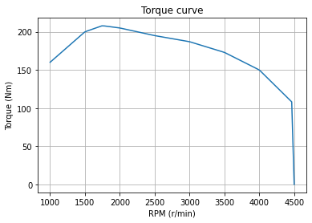
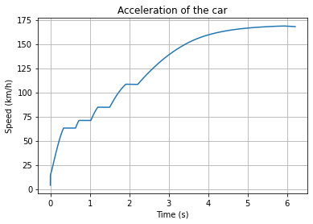

Je suis étudiant en dernière année de génie mécanique à l'ENSTA Brest et à la CTU de Prague, avec un fort intérêt pour la modélisation numérique, la CAO orientée calcul de structures, l'automatisation des processus et les industries de l'aéronautique, du naval et de la défense.
Ce que vous trouverez ici :
Des informations sur mon parcours (diplômes, compétences, centres d'intérêt...).
Les rapports et fichiers (modèles CAO, codes...) de mes projets universitaires.
Les rapports et fichiers de mes expériences professionnelles.
Anglais courant (niveau professionnel), français (langue maternelle) et allemand intermédiaire.
Maîtrise des logiciels suivants :
CATIA V5, SolidWorks, Abaqus, ANSYS, RDM7 et OnShape.
Matlab/Simulink et Siemens Simcenter Amesim.
Python (API OpenAI, json, socket, PySide6, pandas, réseau...) et C++ pour Arduino.
Formation
Diplôme d'ingénieur en architecture de véhicules
ENSTA, Brest (France) - 2023-2026
Je suis actuellement le cursus ingénieur de l'ENSTA (anciennement ENSTA Bretagne), une formation française de niveau master. Tout au long du programme, j'ai construit de solides bases dans les domaines suivants :
Calcul par éléments finis, fatigue des structures et analyse modale.
Dynamique multicorps, modélisation des pneumatiques, dynamique du véhicule et systèmes avancés d'aide à la conduite.
Comportement des matériaux composites et polymères, alliages métalliques et traitements thermiques, procédés de fabrication.
Systèmes énergétiques : thermodynamique, mécanique des fluides et moteurs à combustion interne.
Au-delà des cours, je suis membre de l'association étudiante de drones FPV et du club de robotique. Ces activités renforcent mes compétences pratiques d'ingénieur, mon expérience du prototypage et ma capacité à travailler efficacement en équipe.
Maîtrise des outils de CAO et de calcul par éléments finis tels que CATIA V5, SolidWorks, Abaqus et OnShape.
Expérience en modélisation du comportement de systèmes physiques avec Matlab/Simulink, Siemens Simcenter Amesim et Python.
Développement d'algorithmes en C++ pour Arduino et en Python. Utilisation de Python pour des simulations multi-agents, des interfaces utilisateur et des communications sur mesure, par exemple pour un jeu vidéo multijoueur.
Master of Automotive Engineering
Université technique de Prague (République tchèque) - 2025-2026
Je suis ce master en parallèle de mon cursus ingénieur à l'ENSTA Bretagne. Les enseignements couvrent la thermodynamique, la dynamique des solides, l'électrotechnique et la mobilité durable. Grâce à ce double cursus, j'ai développé une solide base pluridisciplinaire sur les systèmes automobiles, appuyée par une expérience concrète en simulation, en développement de stratégies de contrôle et en conception mécanique. Mon cursus y aborde les thèmes suivants :
Théorie des moteurs à combustion interne et thermodynamique, modélisation du comportement moteur sous GT-Suite avec des modèles 0D/1D/3D (1 zone, 2 zones et multizones).
Électronique de puissance et accessoires électriques des moteurs thermiques, systèmes de commande des moteurs AC.
Transmissions mécaniques et hydrauliques, groupes motopropulseurs hybrides.
Modélisation multicorps du véhicule, modélisation dynamique des suspensions automobiles, dynamique du véhicule.
Classes préparatoires - PSI
Lycée Naval, Brest (France) - 2021-2023
Pendant mes classes préparatoires PSI au Lycée Naval, un établissement militaire, j'ai suivi un cursus scientifique et technique intensif qui a consolidé mes bases en mathématiques, physique, lettres et sciences de l'ingénieur. Cette période m'a permis de faire mes premiers pas avec Python, MATLAB et SolidWorks, avec pour aboutissement un projet de simulation numérique modélisant la propagation d'un incendie en milieu confiné. Au-delà des études, l'environnement militaire a joué un rôle central dans la construction de mon état d'esprit : à travers des activités collectives exigeantes, j'ai développé de solides capacités de travail en équipe et de leadership, et cultivé des qualités essentielles telles que la persévérance, la rigueur, la résilience et l'esprit de décision, des valeurs qui continuent de guider mon travail d'ingénieur.
Ce stage portait sur la conception et la mise en œuvre de moyens d'essais pour des applications aérospatiales. J'ai participé au développement d'un banc d'essai pleinement opérationnel pour un groupe auxiliaire de puissance (APU) Garrett GTCP85-98D et conçu les éléments de base d'un bec Bunsen grande échelle destiné à la recherche. Cette expérience a renforcé mes compétences en prototypage, en diagnostic de pannes, en gestion de la sécurité et en intégration de systèmes dynamiques.
Conception et réalisation d'un panneau de commande complet pour un turbogénérateur Garrett GTCP85-98D, intégrant électronique de puissance, câblage, appareillage de commutation et systèmes de sécurité, au sein d'une équipe de trois chercheurs.
Études thermodynamiques pour évaluer la faisabilité d'un fonctionnement de l'APU en intérieur et l'évacuation des gaz d'échappement.
Diagnostic et résolution de problèmes de circuit carburant et de communication affectant le démarrage et la stabilité de l'APU.
Campagnes d'essais en extérieur pour valider le comportement opérationnel de l'APU et l'architecture du panneau de commande.
Participation au dimensionnement d'un bec Bunsen grande échelle destiné à des mesures de radicaux OH et CH.
Efficient Hydrogen Motors (EHM) est une jeune entreprise qui développe des moteurs à combustion d'hydrogène pour les poids lourds. J'ai rejoint l'équipe aux premiers stades de son développement, en travaillant au plus près des ingénieurs et des techniciens dans un petit atelier de R&D.
Contrôle dimensionnel de pièces moteur usinées à l'aide d'un système de mesure 3D (Keyence XM) et rédaction de rapports de conformité. Programmation des pièces dans le logiciel Keyence directement à partir de plans ISO-128/ISO-2768.
Soutien à l'inventaire et à la production, avec l'organisation des bases de données de composants et la mise en place des premiers processus d'atelier.
Aide à l'assemblage et travail concret sur des sous-ensembles mécaniques.
Mise en place d'un banc d'essai de pompe à huile : intégration mécanique, câblage électrique, dépannage d'un moteur triphasé et réalisation d'essais de performance.
J'ai obtenu mon diplôme de moniteur de voile en 2021 dans le club où je navigue depuis l'âge de 10 ans, après y avoir été bénévole de 2017 à 2021. J'ai également participé à des compétitions dans plusieurs séries, dont les championnats du monde d'Open Bic en 2018, le Laser et la planche à voile.
Encadrement de stagiaires de tous âges dans des situations et des conditions météo variées.
Enseignement en français, en anglais et en allemand.
Développement de solides capacités de travail en équipe et de planification des tâches.
Application de connaissances théoriques et pratiques sur les phénomènes aérodynamiques dans le contexte de la voile.
Expérience concrète de l'entretien des moteurs hors-bord.
Projets
Conception du berceau d'une pièce d'artillerie CAESAR
Projet universitaire · ENSTA 2025 · Abaqus, Catia, Python
Le berceau est la pièce de structure reliant le châssis au tube d'artillerie sur le canon automoteur CAESAR. Ce projet a été mené en binôme sous l'encadrement d'ingénieurs de KNDS (Nexter). Notre principal défi était la modélisation fidèle des joints soudés soumis à des chargements dynamiques et multidirectionnels. Plusieurs aspects du système étant confidentiels, le rapport ne peut pas être publié ici.
Détermination de la valeur des cas de charge à partir de mesures réelles à l'aide d'algorithmes Python, incluant la résolution d'équations différentielles.
Conception des modèles CAO du berceau en tenant compte des contraintes réelles d'assemblage.
Analyse par éléments finis des joints soudés avec validation selon le critère FAT90.
Évaluation en fatigue de la conception à partir de modèles de Manson–Coffin, suivant les recommandations du CETIM.
Projet universitaire · ENSTA 2024 · Python, OnShape, Catia


Ce projet visait à transformer une boîte de vitesses manuelle BMW en un système automatisé, avec une sélection des rapports par actionneurs. Notre équipe de quatre étudiants s'est réparti les responsabilités ; j'étais principalement en charge de la modélisation CAO et des simulations en Python.
Optimisation des performances du 0-100 km/h avec Python.
Conception des actionneurs sur un modèle simplifié de la boîte sous OnShape et Catia V5.
Amélioration du rendement grâce à des stratégies basées sur la cartographie moteur, sur un cycle WLTP (Worldwide harmonized Light vehicles Test Procedure).
Projet universitaire · ENSTA 2024 · RDM7, Abaqus, Catia, Python
Conception d'un mécanisme de mise à l'eau de drones sous-marins (USV) pour Ewan Lebourdais, photographe officiel de la Marine nationale, en soutien à des opérations de photographie sous-marine. Le principe de la conception est proche de celui d'une grue.
Prédimensionnement de la structure sous RDM7 et définition des cas de charge préliminaires.
Développement de modèles CAO avec un fort accent sur la fabricabilité et la facilité d'assemblage.
Modélisation du comportement des liaisons et des mécanismes d'usure pour garantir la fiabilité à long terme en milieu marin.
Évaluation de la durée de vie des roulements selon la norme ISO 281.
Analyse fréquentielle du support d'USV et du système d'équilibrage pour valider l'exploitation par mer force 4.
Moulinet de pêche imprimé en 3D, quasi sans visserie
Projet personnel · 2025 · OnShape, Bambustudio
J'ai conçu sur mon temps libre, sous OnShape, un moulinet casting entièrement imprimé en 3D, pensé pour un assemblage très simple grâce à des pièces à emboîtement conique, un unique ressort de compression de stylo à bille, et des fonctionnalités concrètes comme un train épicycloïdal 4:1, un embrayage automatique et un frein à disque réglable ; je vends aujourd'hui les fichiers sur Cults3D (5€), où ils ont déjà généré 60€ de revenus passifs.
J'ai conçu chaque pièce pour s'assembler par simples coins de blocage, avec un seul composant externe (un ressort de compression de stylo à bille standard), pour un montage propre, intuitif et sans prise de tête.
J'ai rédigé une notice d'assemblage claire, avec un tutoriel pas à pas et des réglages d'impression détaillés, pour ajuster le remplissage et l'orientation afin d'améliorer la résistance des pièces les plus sollicitées.
J'ai optimisé la mécanique avec un train épicycloïdal 4:1 sur mesure, un embrayage automatique qui se réengage à la mise en rotation de la manivelle et un frein à disque réglable, apportant les vraies fonctions d'un moulinet à une conception entièrement imprimable, disponible sur Cults3D (voir la page du modèle 3D).
Projet personnel · 2025 · OnShape, Bambustudio, CAEplex
J'ai développé un châssis de drone ultraléger entièrement sur mesure, conçu pour embarquer des composants FPV standards et une caméra d'action 4K pour filmer des événements. La cellule est assez compacte pour voler en intérieur en toute sécurité, tout en restant puissante et stable en extérieur.
Pour optimiser les performances, j'ai utilisé le calcul par éléments finis (FEA) afin d'augmenter la rigidité et la durabilité de la structure tout en minimisant la masse. Le châssis final pèse 50 g, atteignant mon objectif de conception de moins de 55 g pour maximiser l'autonomie avec deux LiPo 1S de 550 mAh, tout en restant largement sous la limite réglementaire européenne des 250 g.
Le châssis intègre plusieurs fonctionnalités :
Grille de gestion thermique sur la plaque supérieure, ajoutée après avoir diagnostiqué une surchauffe lors du tournage d'un concert.
Support dédié pour une caméra RunCam Thumb Pro W 4K.
Implantation propre des composants : moteurs, contrôleur de vol, système FPV et distribution électrique.
J'ai monté cet ensemble pour obtenir des images de qualité professionnelle à moindre coût (environ 220€ au total, contre près de 1000€ pour des alternatives commerciales comme le DJI Avata ou le BetaFPV Pavo Pico). Le drone a déjà volé avec succès lors de concerts, défilés de mode, événements en hôtel et rallyes. La vidéo ci-dessous est une compilation de séquences que j'ai filmées.
JobPilot – Plateforme de candidatures supervisée (IA + automatisation)
Outil de productivité personnel · 2025-2026 · Python, FastAPI, SQLite, Playwright, API Claude, PWA
JobPilot est le successeur de mon premier assistant de candidatures (un outil de bureau PySide6 + Word/Outlook). C'est une plateforme web locale qui gère toute la chaîne des candidatures spontanées : elle collecte les offres sur les sites carrières des entreprises, les note par rapport à mon profil, génère des documents personnalisés et peut même remplir les formulaires de candidature, tout en me gardant dans la boucle à chaque étape importante.
Collecte et notation des offres :
Des scrapers dédiés (LinkedIn, portails basés sur Workday, Safran, Naval Group, Tesla...) alimentent une base SQLite locale, et chaque offre est notée avec une synthèse points forts / points faibles pour prioriser les meilleures correspondances.
Documents personnalisés en une page :
Les modèles de CV sont de simples fichiers Word contenant des {{balises}} rédigées en langage naturel ; un LLM les remplit pour chaque offre (français/anglais, avec/sans photo) et rédige une lettre de motivation, puis le tout est exporté en PDF avec un CV garanti sur une page, selon un flux générer → relire → approuver.
Remplissage supervisé des formulaires (autoapply) :
Une étape de reconnaissance cartographie les pages carrières et identifie l'ATS utilisé, puis Playwright remplit les formulaires de candidature. Un mode relecture me laisse vérifier et envoyer chaque candidature moi-même ; un mode automatique à cadence limitée est réservé aux ATS bien pris en charge, toute question ambiguë est remontée comme exception plutôt que devinée, et chaque envoi fait l'objet d'une capture d'écran.
Application mobile hors ligne :
Une PWA servie par le backend me permet de trier et d'examiner les offres depuis mon téléphone, même quand l'ordinateur est éteint ; les décisions sont mises en file localement puis synchronisées à la connexion suivante.
Je suis ouvert aux opportunités de stage et d'emploi en France, en Europe et dans le monde entier.
Le meilleur moyen de me contacter est l'e-mail ou LinkedIn.